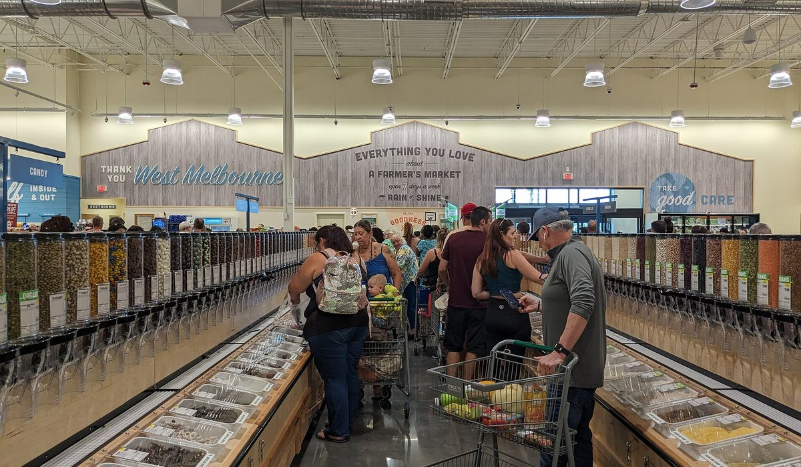
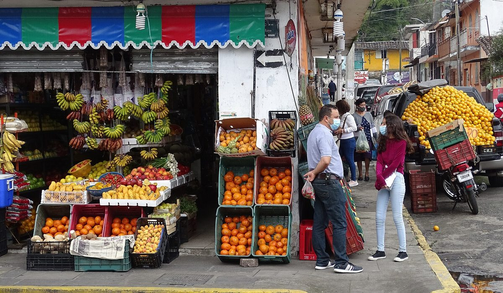

En bref
La meilleure enseigne bio en 2026 est Biocoop, avec une note globale de 8,3/10. Elle cumule la gamme la plus large du panel, du vrac dans tous ses magasins et un panier dans la moyenne. Naturalia arrive deuxième (7,6/10) sur le réseau urbain, Carrefour Bio reste la moins chère mais avec une gamme trois fois plus courte.
- Panier de 20 produits, de 54 € chez Carrefour Bio à 71 € chez Naturalia
- Biocoop compte 6 200 références en moyenne, La Vie Claire 3 100, Carrefour Bio 1 900
- Le vrac est présent dans 100 % des Biocoop, 70 % des La Vie Claire et 35 % des Naturalia
- Les avis Google donnent 4,4/5 à Biocoop et 4,1/5 à Naturalia sur douze mois
Sommaire de ce comparatif
Le classement des enseignes bio
Nous notons chaque enseigne sur cinq critères, le prix du panier, la largeur de gamme, la proximité, les avis clients et une note globale pondérée. En magasin, la gamme pèse le plus. Personne ne fait ses courses dans trois enseignes.
01 La gamme la plus large6 200 références, vrac partout8,3/10
La gamme la plus large6 200 références, vrac partout8,3/10
La gamme la plus large6 200 références, vrac partout8,3/1002Le réseau le plus dense250 magasins en ville7,6/10
03 La marque propre1 200 produits maison7,4/10
La marque propre1 200 produits maison7,4/10
La marque propre1 200 produits maison7,4/10Biocoop prend la première place parce qu'elle est la seule du panel à réunir plus de 6 000 références et du vrac dans chaque magasin, avec un panier qui reste dans la moyenne. Naturalia gagne sur la densité du réseau en ville, Carrefour Bio sur le prix pur.
Le tableau comparatif des 8 enseignes
Chaque ligne correspond au même panier de 20 produits du quotidien, lait, œufs, pâtes, légumes de saison, café, relevé en rayon.
| Enseigne | Note /10 | Panier 20 produits | Références | Vrac | Le point fort |
|---|---|---|---|---|---|
| BiocoopNotre choix | 8,3 | 61 € | 6 200 | Oui, partout | La gamme et le vrac |
| Naturalia | 7,6 | 71 € | 4 300 | Partiel | Le réseau urbain |
| La Vie Claire | 7,4 | 64 € | 3 100 | Majoritaire | La marque propre |
| Carrefour Bio | 6,9 | 54 € | 1 900 | Rare | Le prix |
| Bio c' Bon | 6,7 | 66 € | 2 800 | Partiel | Les horaires |
| Marché de quartier | 6,5 | 58 € | Variable | Oui | Le local |
| Naturéo | 6,3 | 63 € | 2 400 | Oui | Les magasins de périphérie |
| Satoriz | 6,2 | 60 € | 2 600 | Partiel | Le Sud-Est |
Panier de 20 produits bio courants, prix relevés en rayon hors promotion en septembre 2026, en région parisienne et à Lyon.

L'écart de prix entre la moins chère et la plus chère atteint 17 €, soit 31 %. Il ne se voit pas sur les mêmes produits. Il vient des légumes et des produits frais, pas de l'épicerie sèche.
Quelle enseigne a la gamme la plus large
Nous avons compté les références sur les catalogues en ligne et vérifié en rayon dans deux magasins par enseigne.
- Biocoop dépasse les 6 000 références, dont 180 en vrac
- Naturalia se distingue sur la cosmétique et les compléments
- La Vie Claire pousse sa marque propre, 1 200 produits
- Carrefour Bio reste sous 2 000 références
Une gamme large n'est pas un luxe. C'est ce qui évite le second magasin le samedi.
Combien coûte un mois de courses bio
Nous avons multiplié le panier hebdomadaire par 4,3 pour un foyer de deux personnes.
| Enseigne | Mois | Écart avec Biocoop |
|---|---|---|
| Carrefour Bio | 232 € | -30 € |
| Marché | 249 € | -13 € |
| Biocoop | 262 € | 0 € |
| La Vie Claire | 275 € | +13 € |
| Naturalia | 305 € | +43 € |
Panier hebdomadaire × 4,3, prix relevés en septembre 2026.

Carrefour Bio gagne sur le ticket. Mais 30 € par mois d'écart s'achètent au prix d'une gamme trois fois plus courte et d'un vrac quasi absent.
Biocoop, Naturalia ou La Vie Claire, comment choisir
Si votre priorité est le choix
Biocoop, sans hésiter. C'est la seule enseigne où le vrac, le frais et l'épicerie tiennent dans un seul magasin.
Si votre priorité est la proximité en ville
Naturalia. 250 magasins, souvent ouverts tard, au prix d'un panier 16 % plus cher.
Si votre priorité est le budget
Carrefour Bio ou le marché pour les légumes, en acceptant une gamme courte.
Notre verdict
Sur nos relevés de septembre 2026, Biocoop est la meilleure enseigne bio avec 8,3/10. Elle gagne sur la gamme et le vrac, tient la moyenne sur le prix.
Si vous habitez en centre-ville et rentrez tard, Naturalia. Si le budget commande, Carrefour Bio pour l'épicerie et le marché pour les légumes.
Questions fréquentes
Quelle est la meilleure enseigne bio en 2026 ?
Biocoop obtient la meilleure note globale de notre comparatif avec 8,3/10, grâce à 6 200 références, du vrac dans chaque magasin et un panier de 61 € pour 20 produits. Naturalia suit avec 7,6/10.
Quelle enseigne bio est la moins chère ?
Carrefour Bio, avec un panier de 54 € pour 20 produits, contre 61 € chez Biocoop et 71 € chez Naturalia.
Où trouver le plus de vrac ?
Chez Biocoop, présent dans tous les magasins avec 180 références en moyenne. La Vie Claire en propose dans 70 % de ses magasins.
Combien coûte un mois de courses bio pour deux ?
Entre 232 € chez Carrefour Bio et 305 € chez Naturalia, 262 € chez Biocoop, pour un panier hebdomadaire de 20 produits.
Comment sont notées les enseignes ?
Cinq critères sur 10, prix du panier, largeur de gamme, proximité, avis clients, note globale pondérée. Prix relevés en rayon hors promotion.
Notre méthode
Ce comparatif repose sur des données publiques, vérifiables une par une.
- Les prix sont relevés en rayon et sur les sites des enseignes, hors promotion, sur un panier identique
- La largeur de gamme est comptée sur les rayons frais, vrac et épicerie à partir des catalogues en ligne
- Les avis clients proviennent de Google Maps et de Trustpilot, sur les douze derniers mois
- Les engagements (vrac, local, commerce équitable) sont ceux publiés par chaque enseigne
- Les relevés sont datés et refaits chaque trimestre